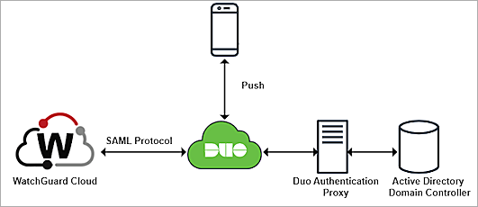
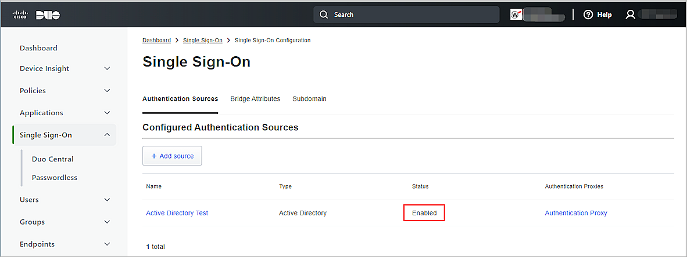
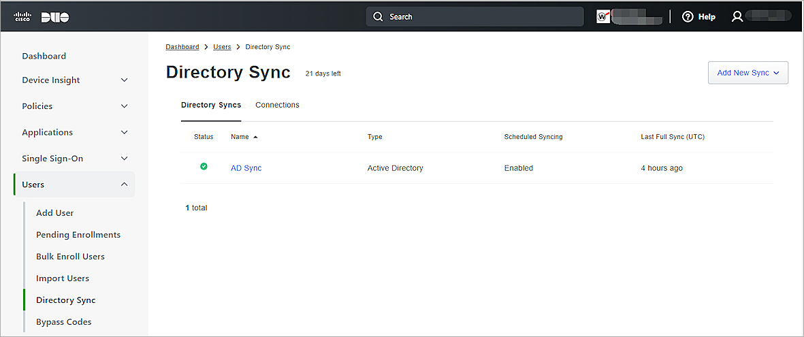
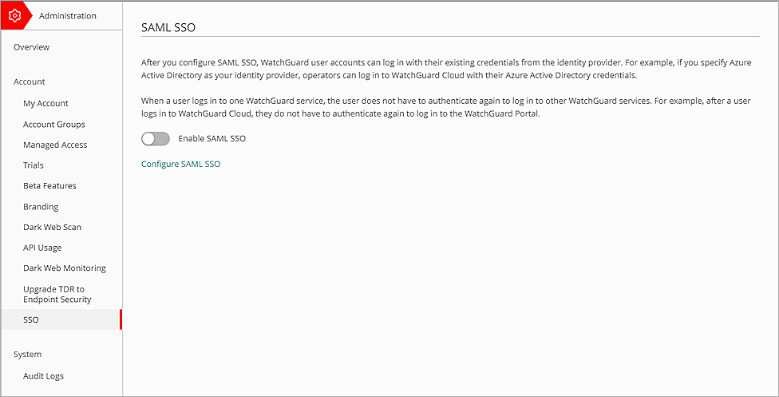
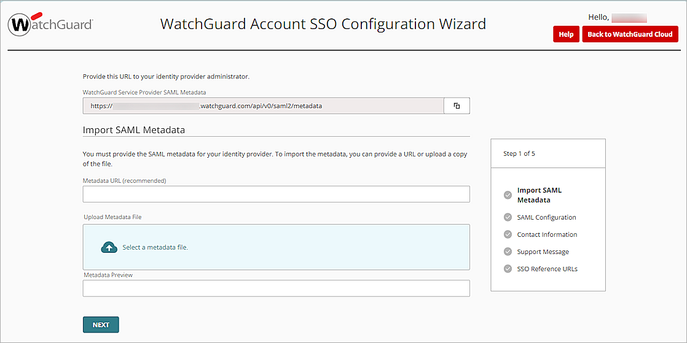
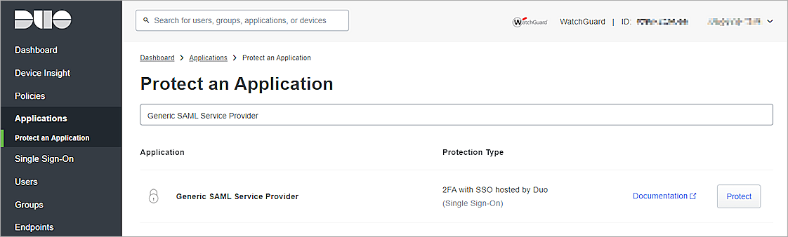
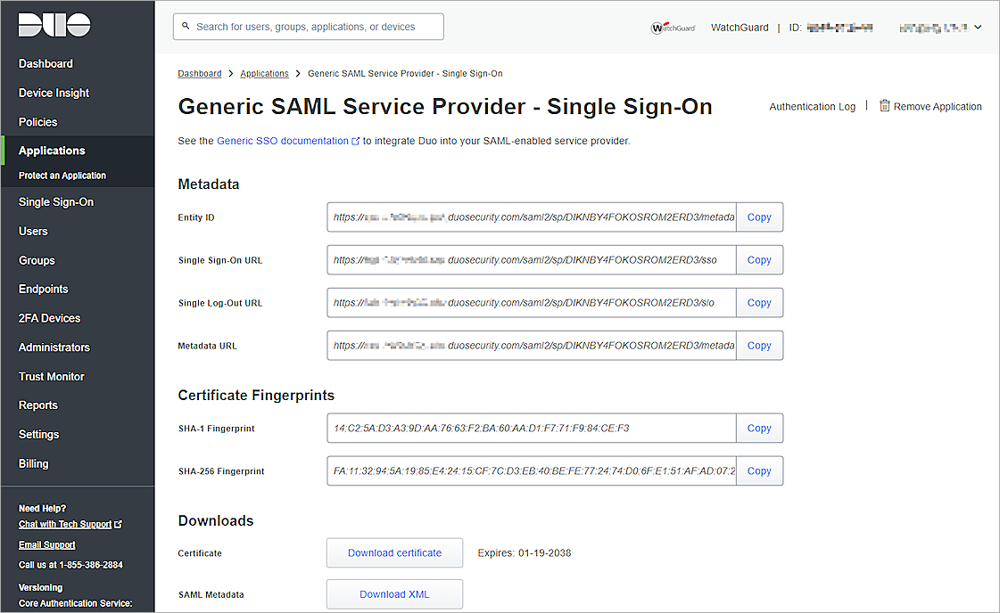
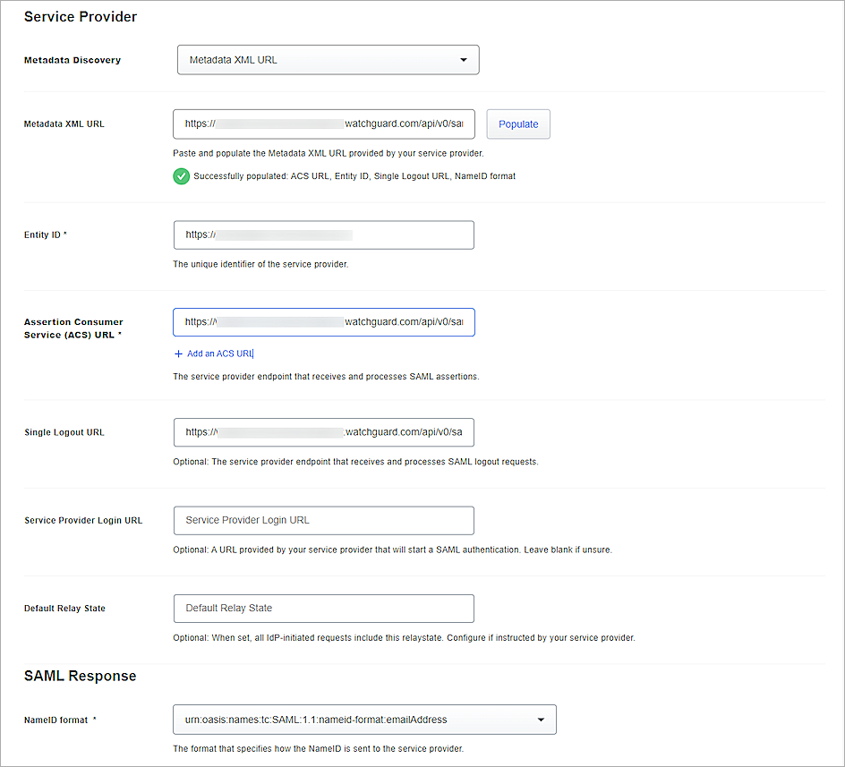
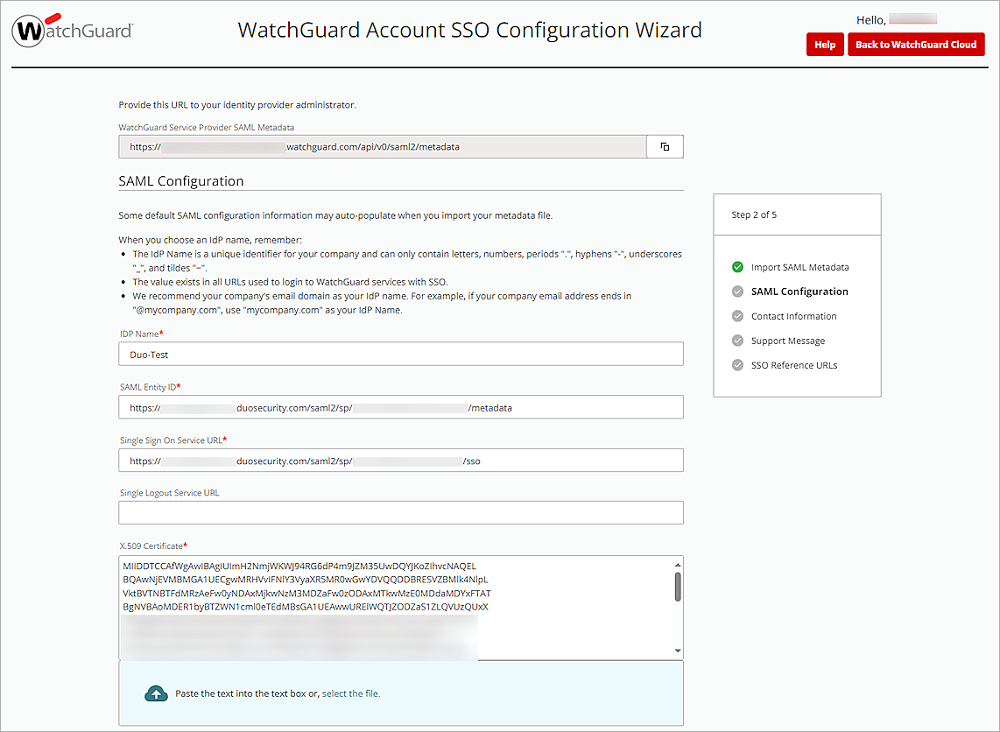
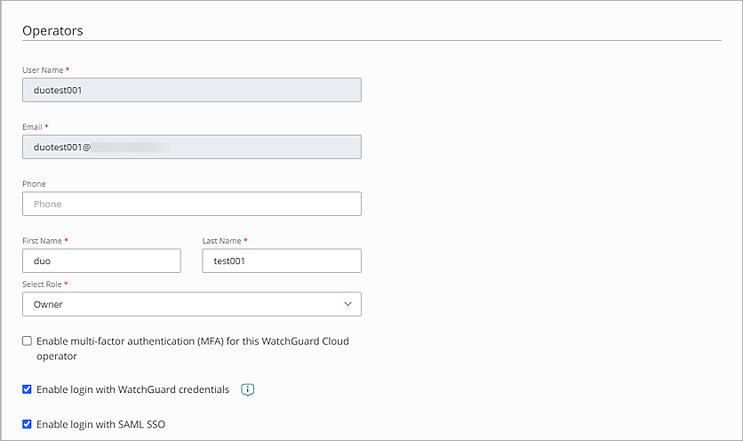

This document describes how to set up multi-factor authentication (MFA) for your WatchGuard Accounts with Duo and Active Directory.
Contents
WatchGuard Account Authentication Data Flow with Duo and Active Directory
This diagram shows the data flow of an MFA transaction for WatchGuard Cloud.

Before You Begin
Before you begin these procedures, make sure that:
- A token is assigned to a user in Duo mobile.
- You configure a server to host the Duo Authentication Proxy.
- You have service account credentials for Active Directory.
- You have a domain host account to verify the authentication user email domain with a .TXT record.
- You have a tier-1 WatchGuard Cloud account and an operator with the Owner or Administrator role.
Additional charges might apply to use Duo.
Configure Duo
To configure Duo, complete these steps:
- Configure Active Directory for Duo SSO.
- Synchronize Users from Active Directory to Duo.
- Create a Cloud Application in Duo.
Configure Active Directory for Duo SSO
The Duo Authentication Proxy receives authentication requests and performs primary authentication against Active Directory, then performs secondary authentication with Duo.
To configure Active Directory for Duo SSO:
- Install and configure Duo Authentication Proxy on your local network.
- Make sure Authentication Proxy is connected to your directory domain.
- Configure Active Directory to authenticate with Duo Single Sign-On.
- To make sure your users log in to the correct sign-on account, add one or more Permitted Email Domains.
Each Permitted Email Domain requires ownership verification. - To test your Active Directory configuration, before you save the configuration, connect to Authentication Proxies.
For more information about how to configure Active Directory with Duo Single Sign-on, go to the Duo Single Sign-On documentation.
After you configure Active Directory for Duo SSO, the status of the Active Directory authentication resource in Duo is Enabled.

Synchronize Users from Active Directory to Duo
Before you synchronize users from Active Directory to Duo, make sure that:
- You install and configure Duo Authentication Proxy on your local network.
- You configure the Active Directory in Duo.
- The status on the AD Sync is Connected.
You can sync the complete Active Directory or the individual users from Active Directory to Duo. To view the synchronized users or groups in Duo, go to the Users or Groups page.
The users you sync to Duo must have an email address with Permitted Email Domains verified in the Duo SSO configuration.
For more information about how to sync users from Active Directory to Duo, go to Active Directory Sync for Duo Users and Admins.

Create a Cloud Application in Duo
Before you configure the service provider application, make sure you Configure Active Directory for Duo SSO and Synchronize Users from Active Directory to Duo.
To create a cloud application in Duo:
- Log in to WatchGuard Cloud with your WatchGuard user account credentials.
- Select Administration > SSO.
The SAML SSO page opens.

- Click Configure SAML SSO.
- Click Continue.
The WatchGuard Account SSO Configuration Wizard page opens.

- In the WatchGuard Service Provider SAML Metadata text box, copy the WatchGuard Service Provider SAML Metadata URL.
Keep this page open to complete the WatchGuard Account SSO Configuration Wizard later.
- To open the WatchGuard Service Provider SAML metadata file, on a new tab on your web browser, type or paste the WatchGuard Service Provider SAML Metadata URL that you copied in the previous step.
The WatchGuard Service Provider SAML Metadata File opens. - From the WatchGuard Service Provider SAML Metadata File, copy the values of the entityID, SingleLogoutService Location, and AssertionConsumerService Location parameters. You need this information when you configure Duo.
- [Optional] To save the WatchGuard Service Provider SAML Metadata File to your local computer, right-click, then click Save.
- Log in to the Duo Admin Panel.
- From the navigation menu, select Applications > Protect an Application.
The Protect an Application page opens.

- In the Application list, next to Generic SAML Service Provider, click Protect.
The Generic SAML Service Provider - Single Sign-On page opens.

- From the Metadata section, copy the value of the Metadata URL parameter.
- To download the Duo metadata file, from the Downloads section, next to SAML Metadata, click Download XML. You need this information when you configure SSO for your WatchGuard Account in the wizard.
- Scroll down to the Service Provider section.

- From the Metadata Discovery drop-down list, select None (Manual Input), Metadata XML URL or Metadata XML file. In this example, we select Metadata XML URL.
If you select None(Manual Input), type or paste the values of the Entity ID, Assertion Consumer Service (ACS) URL and Single Logout URL parameters you copied from the WatchGuard Service Provider SAML Metadata File in step 7. - In the Metadata XML URL text box, type or paste the WatchGuard Service Provider SAML Metadata URL you copied in the previous section, then click Populate.
The values of the ACS URL, Entity ID, Single Logout URL, and NameID Format parameter fill in automatically. - Keep the default values for all other settings.
- Click Save.
Configure SSO for Your WatchGuard Account
To configure SSO for your WatchGuard account:
- On the WatchGuard Account SSO Configuration Wizard page, in the Metadata URL text box, type or paste the metadata URL you copied in the previous section. If you downloaded the Duo metadata file, click Select a Metadata File, then upload the metadata file.
- Click Next.
The SAML Configuration options open.

- In the IDP Name text box, typethe IDP name. In our example, we use DuoTest.
- Keep the default values for all other settings.
- To proceed through the Contact Information, Support Message and SSO Reference URLs pages, click Next three times.
The SSO Reference URLs page opens.The SSO reference URLs provide you with the direct links to the SSO login pages for each account.
- Click Save.
- Click Back to WatchGuard Cloud.
- Select > My Account.
- Select SSO. Make sure the Enable SAML SSO toggle status is green.
- To add operators in WatchGuard Cloud, follow the steps in Add Operators to your Account. After you add an operator, make sure the Enable Login with SAML SSO check box is selected.

To log in with SSO, you must have a WatchGuard Cloud operator account and a Duo user account synced from Active Directory. Both user accounts must have the same email address, and the email address must be a Permitted Email Domain.
When you configure SAML SSO for your WatchGuard account, users can either log in with SSO or with their local user account. We recommend users log in with SSO so they do not have to re-authenticate after their initial login.
Test the Integration
To test Duo MFA with your WatchGuard Account, you can select any method (push, Passkey, or Phone call).
In this example, we show the Duo Push authentication method.
- In a web browser, go to WatchGuard Cloud.
- Click Log In with SSO.
- In the IDP Name text box, type the IDP name. In our example, we type DuoTest.
- Click Log In.
- In the Email Address text box, enter the email address associated with your Active Directory user account.
- Click Next.
- In the Password text box, type your password.
- Click Log In.
The verification code is displayed on your login screen. - Enter the verification code in your Duo Mobile app, then click Verify.
- Approve the authentication request you receive on your mobile device.
You are logged in to WatchGuard Cloud.